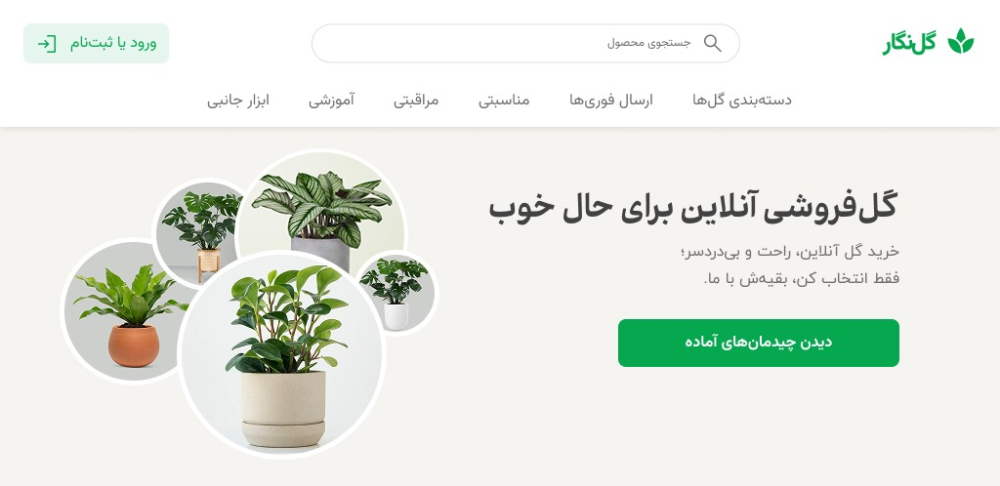
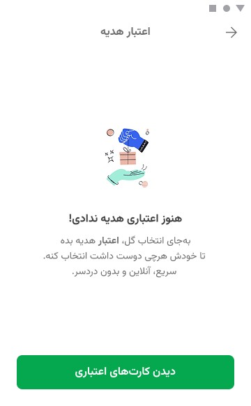
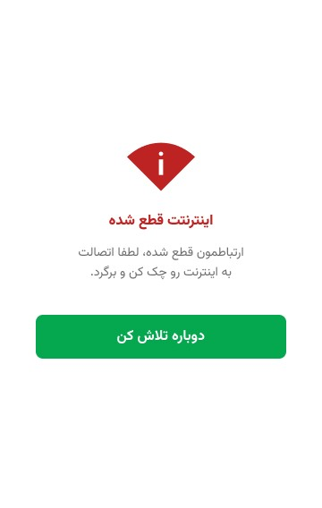
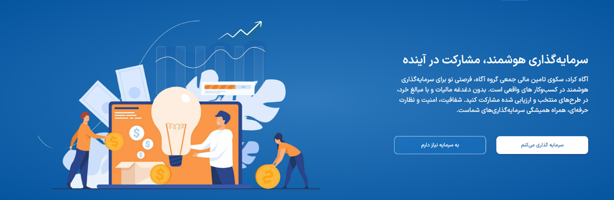
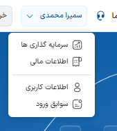
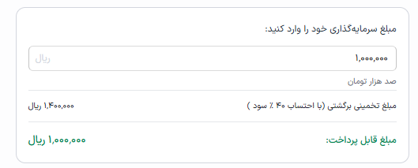
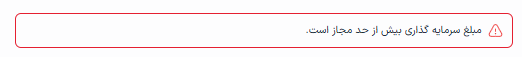

کارشناس محتوا با بیش از ۵ سال تجربه در تولید و استراتژی محتوای دیجیتال در حوزههای فناوری، هوش مصنوعی و بازار سرمایه.
در سالهای اخیر علاوه بر تولید محتوا، در پروژههای محصولمحور، UX Writing، تحلیل رقبا، پژوهش کاربر و طراحی ساختار محتوا فعالیت داشتهام و تجربه همکاری نزدیک با تیمهای محصول، طراحی و استراتژی را کسب کردهام.
طراحی یک محصول محتوایی ساختاریافته برای کاربران فارسیزبانی که میخواهند وارد حوزه هوش مصنوعی شوند؛از پروپوزال اولیه تا انتشار بیش از ۱۶۰ مقاله آموزشی.
کاربران فارسیزبان برای ورود به حوزه هوش مصنوعی با منابع پراکنده و مسیرهای یادگیری نامنسجم مواجه بودند. هدف پروژه طراحی یک مسیر یادگیری ساختاریافته و بومیسازیشده بود تا سازمان بتواند از آن بهعنوان ابزار راهبردی برای جذب و پرورش استعدادها استفاده کند.
طراحی هویت کلامی برند و تجربهای یکپارچه در تمام نقاط تماس کاربر؛از نخستین مواجهه با برند تا وضعیتهای مختلف سیستم.
فروش گل تجربهای احساسی است؛ هدیه دادن، ابراز محبت، جشن گرفتن. اما اکثر پلتفرمهای مشابه با لحنی خشک و تجاری صحبت میکنند. سوال اصلی این بود: چطور میتوان یک پلتفرم گلفروشی را از طریق زبان، «همراه و همدل» احساس کرد؟
این پروژه بهصورت تمرین آموزشی انجام شده است.
زیبایی، لطافت، خلق لحظههای خوش. برند گل را بهعنوان تجربهای احساسی تعریف میکند.
همراهی، پشتیبانی، اعتماد. تاکید بر ساختن لحظههای خوش برای خود یا دیگران.
نگاه هنرمندانه، خلاقیت در ارائه محصول. برند را از یک فروشگاه ساده فراتر میبرد.
لحن برند بر سه اصل تعریف شد: صمیمیت کنترلشده / همدلی بهجای رفاقت / احساس واقعی بدون اغراق
پیام محوری: کاربر دنبال «گل» نیست، دنبال راهی ساده برای خوشحالکردن دیگران است.



آرکتایپ ابزار تصمیم است. وقتی سر یک کلمه شک داشتم، کافی بود بپرسم «آیا این با شخصیت Caregiver همخوان است؟»
تفاوت لحن در جزئیات است؛ یک علامت تعجب، یک «ت» در «سفارشت»، یک کلمه دوستانه به جای اداری.
UX Writing خوب نامرئی است. کاربر آن را نمیبیند، فقط «خرید آسان» احساس میکند.
بررسی تجربه محتوایی کاربران در پلتفرمهای تامین مالی جمعی و ارائه پیشنهادهای بهبود برای آگاه کراد در دو فاز: پژوهش کاربران و ارزیابی محصول.
قبل از هر پیشنهاد محتوایی، یک فاز تحقیق انجام شد تا مطمئن شوم تصمیمات محتوایی مبتنی بر رفتار واقعی کاربر باشند، نه حدس.
مطالعات کتابخانهای — ۱۱ منبع
| منبع | یافته کلیدی |
|---|---|
| Crowdfunding scientific research — user research | نیازها و ترجیحات کاربران در تامین مالی جمعی |
| User Behavior in Crowdfunding — Switzerland | پروژههایی که ۲۴-۷۲ ساعت اول ۲۰-۳۰٪ بودجه جذب کنند، چند برابر شانس موفقیت دارند |
| چارچوبی برای کارزارهای موفق تامین مالی | عوامل موفقیت برای کارآفرینان ایرانی |
| شناسایی عوامل موثر بر موفقیت کمپین | عوامل فردی، محیطی و پروژهای موثر بر نرخ موفقیت |
پرسوناها و اولویتبندی خوشهها
«درک عمیق رفتار، نیازها، ترسها و معیارهای تصمیمگیری کاربران»
«تأمین سریع، قابلاعتماد و شفاف سرمایه برای اجرای پروژه»
کاربران تازهوارد پیش از تصمیمگیری به سیگنالهای اعتماد مانند تعداد سرمایهگذاران توجه میکنند.
هرگونه ابهام در اصطلاحات تخصصی میتواند فرایند سرمایهگذاری را کاملاً متوقف کند.
زبان رسمی و فنی فاصله ذهنی کاربر با محصول را افزایش میدهد.
کاربران هنگام ارزیابی فرصتها به دنبال شفافیت، سادگی و اطمینان هستند.
۹ صفحه کلیدی محصول بررسی شد. برای هر پیشنهاد، ابتدا ایراد موجود توضیح داده شد، سپس بازنویسی با استدلال UX ارائه گردید.
وضوح قبل از هر چیز: هر اصطلاح نامأنوس میتواند جریان تصمیمگیری کاربر را متوقف کند.
اعتماد قبل از اقدام: کاربران پیش از سرمایهگذاری به دنبال نشانههای اعتبار و امنیت هستند.
زبان کاربر، نه زبان سیستم: واژگان باید با مدل ذهنی کاربران همسو باشند، نه با ادبیات فنی سازمان.




پژوهش کاربر فرضیات محتوایی را به تصمیمهای مبتنی بر شواهد تبدیل میکند.
در محصولات مالی، وضوح و اعتماد مهمتر از خلاقیت کلامی هستند.
UX Writing میتواند بدون تغییر در قابلیتهای محصول، تجربه تصمیمگیری کاربران را بهبود دهد.